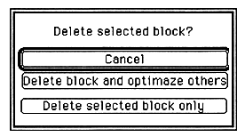

Return to previous page ｜ Return to menu ｜ Go to next page
- New Data
When - New is selected, new data is added to the current map. The data type is the default “BANK data” or the last data type selected in the Data Edit dialog box and the size is 00000.
- Map Name Change
- You can assign a name to each area map for each area. An easy-to-understand name that represents the area can be set when the number of areas is large.
- Cut (Delete)

When you select Cut, a confirmation menu is displayed, where you can choose to update the deleted address or keep the current address. The deleted data is stored and can be retrieved again immediately after the insertion operation.
- Copy
When - Copy is selected, the currently selected data is stored. It can be taken out immediately after the insertion operation.
- Paste
If you select - Paste, the currently stored data is pasted.
- Insert
When - Insert is selected, the currently stored data is inserted. The insertion position is immediately before the data that is currently selected and highlighted. If no data is selected, it will be added at the end.
- Clear
When - Clear is selected, all data other than the data type of the currently selected data is deleted.
- New Map, Cut Map, Copy Map, Paste Map, Insert Map, Clear Map
- Perform the same editing as above for each map, not for each data.
Return to previous page ｜ Return to menu ｜ Go to next page